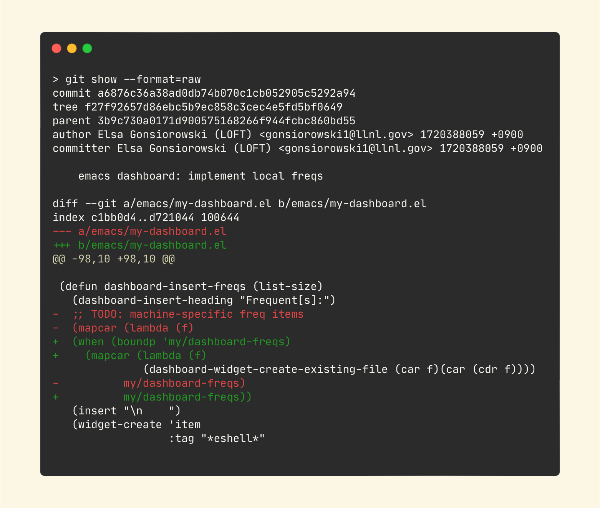

Introduction to Git
Elsa Gonsiorowski
July 11, 2024
Created: 2024-07-08 Mon 16:49
1. Mindset
Software Engineering

Tools of the Trade
- work with a repository on your computer
2. Introduction
Course Goals
- What is version control and why is it important
- Configuring git, using
git config git initand the.gitdirectory- Tracking a change with
git add,git commit - Viewing repository status with
git status - Adding a remote with
git remote - Pushing changes to the remote
git push
Poll
- How many folks have used git at all before?
- How many folks have a GitHub account?
Git Caveats
- Git is powerful
- Git has a terrible user design
- Git is hard to fully learn by yourself
- Git (like any other tool) takes time and practice to get good
Setup
- This is a 2 hour interactive session, there is so much more to learn!
- Please type along!
- You will need:
- A terminal with git installed
- A text editor
- A GitHub account
- Suggested setup: 2 "desktops" or "spaces", one with your editor and one with your terminal
3. What is Version Control
VC Through Naming

VC in Parallel

Key Features
- Version control is unlimited undo (but not at a granular level)
- Version Control allows many people to work in parallel
Other VC Systems

How Git Works

Git Commit

4. Configuring Git
Configuring from the Command Line
git config --global user.name "Ada Lovelace"
git config --global user.email "ada@lovelace.io"
git config --global core.editor "emacs -nw"
git config --global init.defaultBranch main
Help with Config
git config --list
git config --help
cat ~/.gitconfig
Current Config ~/.gitconfig
[core]
editor = emacs -nw
[init]
defaultBranch = main
[user]
name = Ada Lovelace
email = ada@lovelace.io
5. Networking Activity
Working Example
- We are going to create a "database" or repository of people you've met at the summer school
- We will track changes using git and keep it all on GitHub
- The following slides are simple instructions that you need to work through, follow along with me!
Activity: Make Friends
- Create a new file to track your friends, including first name and institution
- I am Elsa from Lawrence Livermore National Lab
- Start tracking this file with Git
- Put this on GitHub
- Talk to your neighbor and add them to your file
- don't forget to commit your changes
- Talk to a different neighbor and add their information
- Add hobbies to your entries
Activity: Friends Challenge
- Open just your text editor on your laptop
- Swap laptops with a neighbor
- Make a change (addition and/or deletion) to the file in front of you
- Swap back
- What changed??
Watch me!
- Figure out what has changed
- Commit changes in separate hunks
Activity: Extra Time
- Find someone's repo on GitHub
- Make a change to their friends file
6. Continue Your Journey
This is just the beginning
- More things to learn:
- branching
- collaboration through "pull" or "merge" requests
- platforms: GitHub and GitLab
Git Hosting Services
- GitHub, GitLab, BitBucket, and many more
- Additional concepts: permissions, "pull request" or "merge request"
- Additional tools: issue tracking, wiki, web/documentation hosting, CI/CD
Get Social
- Sign up for GitHub
- Follow your friends, star your favorite projects
- If you follow me this week I will follow you back
- Use GitHub to showcase projects (may need to get permission)
- Use GitHub to collaborate and network
Activity: GitHub Secret
- Create a new repo called username
- Add a
README.mdfile - Visit your GitHub Profile (
github.com/username)
Git Lessons
Advanced Git Resources
7. Credits
Content inspired by Software Carpentry's Version Control with Git course.
Created with Emacs, Org Mode, and RevealJS.
View the source.